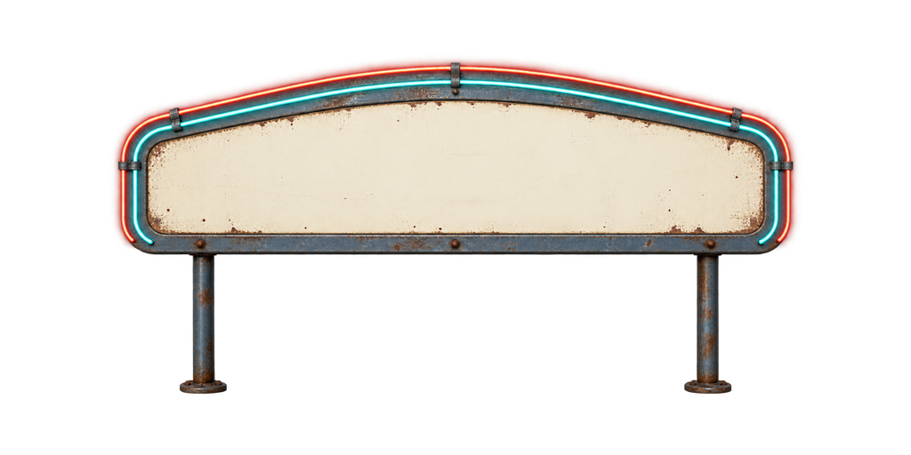
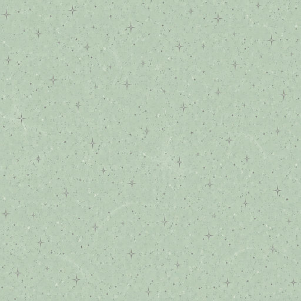
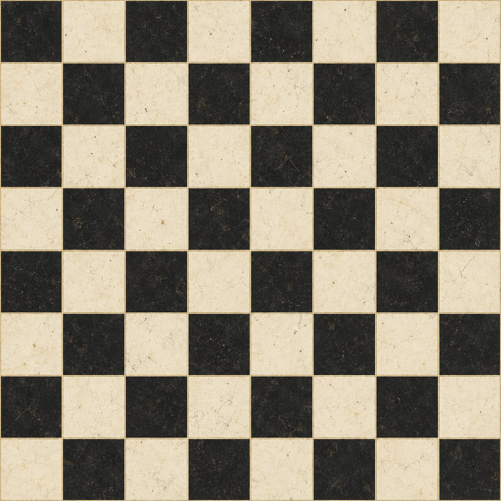
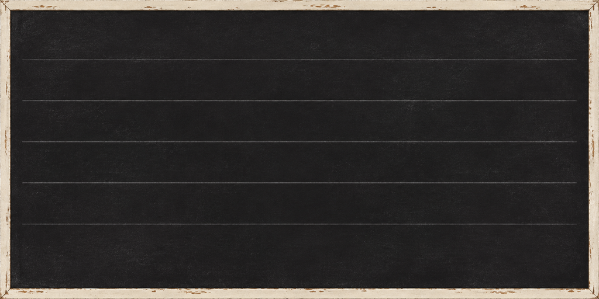
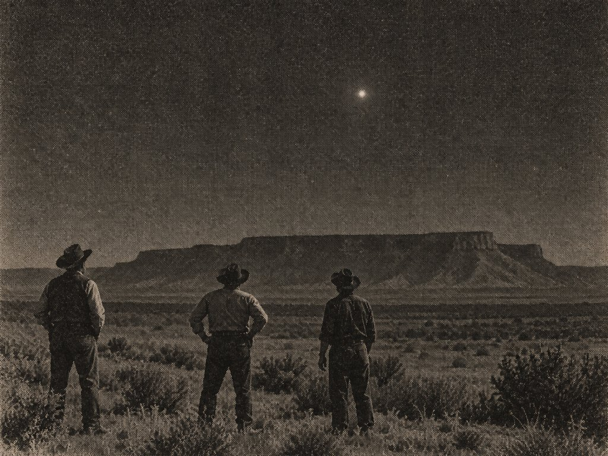
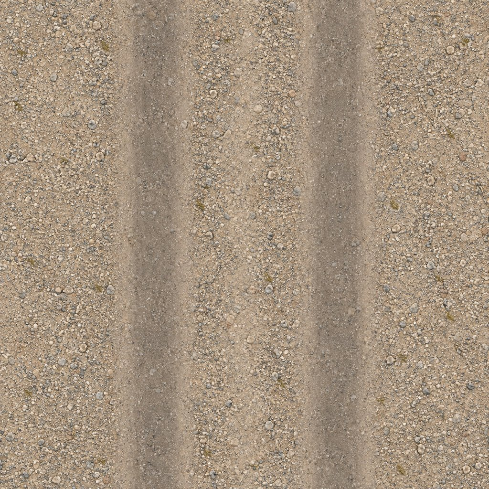

Dinerens neonskilt
diner/sign_diner_blank.png · 1024 × 512 · RGBA4,0 × 2,0 m. Gjennomsiktig utenfor skiltet. Tom skriveflate i midten.

Benkeplate
diner/tex_counter_laminate.jpg · 512 × 5120,6 × 0,6 m per bilde. Rolig under tallerkener og kaffekopper. Se 2 × 2-repetisjon.


Rutegulv
diner/tex_floor_checker.jpg · 1024 × 10242,4 × 2,4 m per bilde, åtte ruter à 30 cm i hver retning. Se 2 × 2-repetisjon.


Menytavle
diner/menu_board_blank.png · 1024 × 5121,6 × 0,8 m. Engelske retter og priser tegnes på de tomme linjene.

Avisfoto fra 1947
diner/clipping_photo_1947.jpg · 1024 × 768Grov rasterstil uten tekst. Bildet er laget for fortellingen og viser ikke en dokumentert historisk hendelse.

Grusvei
road/tex_gravel_track.jpg · 1024 × 10244,0 × 4,0 m per bilde. To parallelle hjulspor. Se 2 × 2-repetisjon.